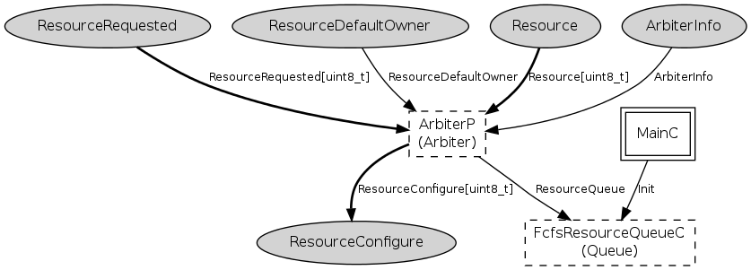

Please refer to TEP 108 for more information about this component and its
intended use.
This component provides the Resource, ArbiterInfo, and ResourceDefaultOwner
interfaces and uses the ResourceConfigure interface as
described in TEP 108. It provides arbitration to a shared resource in
an FCFS fashion. An array is used to keep track of which users have put
in requests for the resource. Upon the release of the resource by one
of these users, the array is checked and the next user (in FCFS order)
that has a pending request will ge granted control of the resource. If
there are no pending requests, then the resource is granted to the default
user. If a new request is made, the default user will release the resource,
and it will be granted to the requesting cleint.
